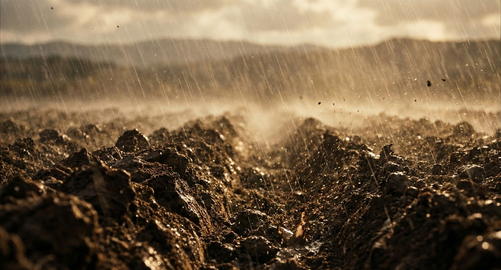
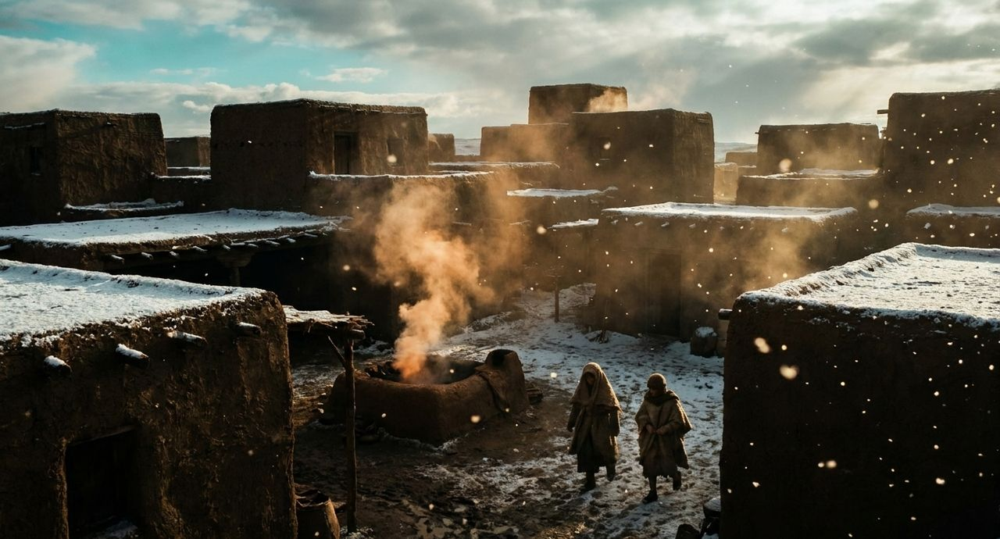
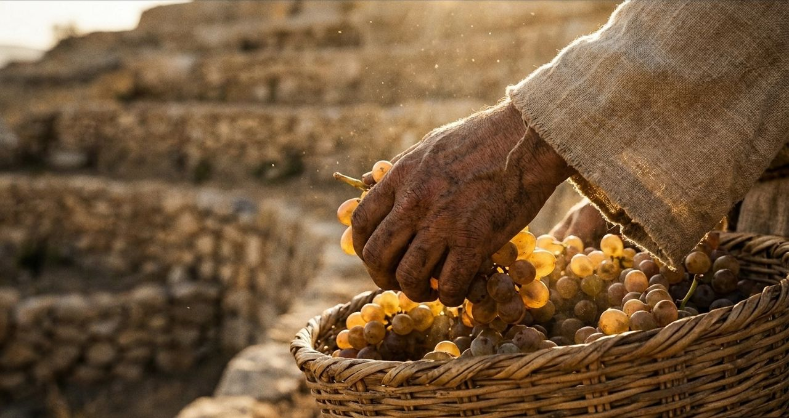
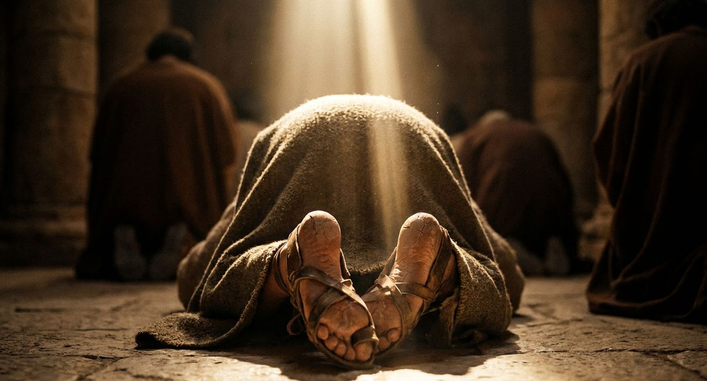

긴장 · 땅에서 올라온 짐승 / 어린 양 같이, 용처럼 / 또 다른 짐승이 땅에서 올라옵니다. 그는 땅에 사는 자들을 처음 짐승에게 경배하게 합니다(13:12). / 어린 양 같이 두 뿔이 있고 용처럼 말을 하더라 계 13:11
 g32_06 흙길을 달리는 선수들의 다리
g32_06 흙길을 달리는 선수들의 다리불일치 의심 태그·장소·분위기
 g40_07 뜨거운 바람에 휘어진 덤불
g40_07 뜨거운 바람에 휘어진 덤불중립 장식 중립 장식
권면 · 아직 끝나지 않은 달음질 / 푯대를 향해 / 바울은 이미 완성했다고 말하지 않고 앞을 향해 달려간다고 합니다(3:12–13). / 푯대를 향하여 그리스도 예수 안에서 하나님이 위에서 부르신 부름의 상을 위하여 달려가노라 빌 3:14 바울의 말
 g43_09 결승 기둥을 향해 달리는 사람(빌 3:14)
g43_09 결승 기둥을 향해 달리는 사람(빌 3:14)본문 설명 장면 낱말·장
g43_09 결승 기둥을 향해 달리는 사람(빌 3:14)본문 설명 본문 설명 · 낱말 푯대
배경 · 추천서 / 추천서가 필요한가 / 3–7장에서 바울은 자기가 맡은 직분을 설명합니다. 먼저 고린도 교회에 추천서가 필요하냐고 묻습니다(3:1). 바울의 대답은 이렇습니다. / 너희는 우리의 편지라 우리 마음에 썼고 뭇 사람이 알고 읽는 바라 고후 3:2
 g21_10 글을 쓰는 손(둘째 그림)
g21_10 글을 쓰는 손(둘째 그림)문맥 배경 태그·장소·분위기
g21_10 글을 쓰는 손(둘째 그림)문맥 배경 문맥 배경 · 낱말 편지 · 태그 scroll
근거 · 사람에게서 나는 향기 / 그리스도의 향기 / 바울은 자기 사역을 눈에 보이는 추천서가 아닌 향기에도 비유합니다. / 우리는 구원 받는 자들에게나 망하는 자들에게나 하나님 앞에서 그리스도의 향기니 고후 2:15 바울의 말
 g25_14 서리 앉은 돌담과 겨울 무화과나무
g25_14 서리 앉은 돌담과 겨울 무화과나무중립 장식 태그·장소·분위기
 g19_08 종려나무 숲과 샘
g19_08 종려나무 숲과 샘중립 장식 중립 장식
근거 · 추천서가 필요한가 / 너희가 우리의 편지라 / 3장에서 바울은 추천서가 필요한지 묻고, 교회 자체를 편지라고 합니다. / 너희는 우리의 편지라 우리 마음에 썼고 뭇 사람이 알고 읽는 바라 고후 3:2 바울의 말
 g19_10 메마른 고원의 길
g19_10 메마른 고원의 길중립 장식 태그·장소·분위기
g40_07 뜨거운 바람에 휘어진 덤불중립 장식 중립 장식
로마서 1–3장 / 진노가 나타나고, 이제는 의가 / 온 세상의 입이 막힌 뒤, '이제는' 무엇이 나타났을까
 g25_02 아침 햇살이 들어오는 열린 성문
g25_02 아침 햇살이 들어오는 열린 성문불일치 의심 태그·장소·분위기
 g09_07 회당의 두루마리
g09_07 회당의 두루마리문맥 배경 문맥 배경 · 최근 반복
긴장 · 하늘로부터 / 또 하나 나타나는 것 / 그런데 바로 다음 절에도 '나타나나니'가 있습니다. / 하나님의 진노가 불의로 진리를 막는 사람들의 모든 경건하지 않음과 불의에 대하여 하늘로부터 나타나나니 롬 1:18
 g26_08 바위 사이 흙탕 급류
g26_08 바위 사이 흙탕 급류중립 장식 태그·장소·분위기
 g01_09 바다 파도
g01_09 바다 파도중립 장식 중립 장식 · 태그 storm_sky · 최근 반복
창세기 10–11장 / 하늘에 닿을 탑, 내려오신 하나님 / 흩어지지 않으려던 사람들이 왜 성읍 짓기를 멈추었을까
 g12_06 강가의 흙벽돌 성과 지구라트
g12_06 강가의 흙벽돌 성과 지구라트본문 설명 장면 낱말·장
g12_06 강가의 흙벽돌 성과 지구라트본문 설명 본문 설명
긴장 · 성읍과 탑 · 11:4 / 우리 이름을 내고 / 이제 그들은 성읍과 탑을 세우자고 합니다. 꼭대기는 하늘에 닿게, 이름은 널리 알리게, 사람들은 흩어지지 않게 하려는 계획입니다. / 우리 이름을 내고 온 지면에 흩어짐을 면하자 창 11:4 중 사람들의 말
 g27_14 무너진 돌 옆에 새로 쌓은 성벽
g27_14 무너진 돌 옆에 새로 쌓은 성벽불일치 의심 태그·장소·분위기
 g01_01 어두운 물 위의 빛
g01_01 어두운 물 위의 빛중립 장식 중립 장식 · 최근 반복
전환 · 내려오신 여호와 · 11:5 / 여호와께서 사람들이 건설하는 그 성읍과 탑을 보려고 내려오셨더라 / 하늘에 닿을 만큼 높이 쌓겠다는 탑. 그러나 그 성읍과 탑을 보려고 여호와께서 내려오십니다.
 g25_03 이슬 맺힌 아침 들풀
g25_03 이슬 맺힌 아침 들풀중립 장식 태그·장소·분위기
 g08_15 성벽 위의 파수꾼
g08_15 성벽 위의 파수꾼문맥 배경 문맥 배경 · 태그 city_wall · 최근 반복
의미 · 두 번의 제안 / 사람들의 “자”, 하나님의 “자” / 사람들이 “자”라고 말하며 탑을 세우려 합니다. 여호와께서도 “자”라고 말씀하십니다.
 g40_11 봄비 뒤 푸른 언덕의 양 떼
g40_11 봄비 뒤 푸른 언덕의 양 떼중립 장식 태그·장소·분위기
 g01_10 새벽 호수
g01_10 새벽 호수중립 장식 중립 장식
의미 · 불러 인도하여 내는 목자 / 쫓아낸 사람들, 불러 내는 목자 / 사람들은 그를 쫓아내어 보냈습니다(9:34). 이어지는 말씀에서 예수님은 자신을 "선한 목자"(10:11)라 하시고, 목자가 양을 어떻게 내보내는지 말씀하십니다. / 양은 그의 음성을 듣나니 그가 자기 양의 이름을 각각 불러 인도하여 내느니라 요 10:3
 g22_10 잃은 양을 어깨에 멘 목자
g22_10 잃은 양을 어깨에 멘 목자본문 설명 장면 낱말·장
g22_10 잃은 양을 어깨에 멘 목자본문 설명 본문 설명 · 낱말 선한 목자 · 태그 shepherd,sheep
긴장 · 바다 앞의 백성 / 눈을 들어 본즉 / 애굽 군대가 바닷가에 장막을 친 백성을 따라잡습니다(14:9). 이스라엘 자손은 몹시 두려워하며 여호와께 부르짖습니다(14:10). / 백성은 모세에게 애굽에 남아 있던 편이 나았겠다고 말합니다. / 애굽 사람을 섬기는 것이 광야에서 죽는 것보다 낫겠노라 출 14:12
 g46_03 먹구름 사이로 들판에 내리는 빛줄기
g46_03 먹구름 사이로 들판에 내리는 빛줄기중립 장식 태그·장소·분위기
 g40_09 해 넘어간 뒤 보랏빛이 남은 광야 능선
g40_09 해 넘어간 뒤 보랏빛이 남은 광야 능선문맥 배경 문맥 배경 · 낱말 광야 · 태그 desert
전환 · 앞으로 나아가라 / 가만히, 그리고 앞으로 나아가라 / 이어서 여호와께서는 모세에게, 이스라엘 자손에게 명령하여 앞으로 나아가게 하라고 하십니다. 하나님이 싸우시겠다는 말씀을 들은 백성에게 걸어가야 할 길이 주어집니다. / 모세에게는 지팡이를 들고 손을 바다 위로 내밀라고 하십니다(14:16). / 이스라엘 자손에게 명령하여 앞으로 나아가게 하고 출 14:15
 g02_03 양 떼와 목자
g02_03 양 떼와 목자불일치 의심 태그·장소·분위기
 g42_14 돌 위에 놓인 겉옷과 신과 지팡이
g42_14 돌 위에 놓인 겉옷과 신과 지팡이문맥 배경 문맥 배경 · 낱말 지팡이
긴장 · 두 번의 이른 아침 / 서로 다른 두 아침 / 하갈과 아이를 보내는 아침, 이삭과 떠나는 아침을 견주어 보세요.
 g12_09 덤불 아래 아이와 빈 가죽부대
g12_09 덤불 아래 아이와 빈 가죽부대본문 설명 장면 낱말·장
g12_09 덤불 아래 아이와 빈 가죽부대본문 설명 본문 설명 · 낱말 가죽부대
의미 · 미리 말씀하신 자리 / 만나 주겠다고 하신 곳 / 하나님은 성막을 지으라 하실 때 거기서 모세를 만나 말씀하겠다고 하셨습니다(출 25:22). 장막이 세워진 뒤, 같은 자리에서 그 목소리가 들립니다.
 g15_01 지성소의 언약궤
g15_01 지성소의 언약궤본문 설명 장면 낱말·장
g15_01 지성소의 언약궤본문 설명 본문 설명 · 낱말 속죄소
긴장 · 긍휼의 그릇 / 이방인 중에서도 / 그러므로 "오직 긍휼히 여기시는 하나님으로 말미암음이니라"(9:16). 토기장이의 비유 뒤에(9:21–23), 바울은 긍휼의 그릇이 누구인지 밝힙니다. / 이 그릇은 우리니 곧 유대인 중에서뿐 아니라 이방인 중에서도 부르신 자니라 롬 9:24
 g07_07 토기장이의 손
g07_07 토기장이의 손본문 설명 장면 낱말·장
 g31_04 물레 위에서 빚어지는 그릇(렘 18)
g31_04 물레 위에서 빚어지는 그릇(렘 18)본문 설명 본문 설명 · 낱말 토기장이
전환 · 나오는 생명들 · 8:2–19 / 들어가라 하신 하나님이 이제 나오라고 하십니다 / 비가 그치고 물이 점점 물러갑니다(8:2–5). 방주로 들어가라고 하셨던 하나님이(7:1) 이제 노아와 그의 가족에게 나오라고 말씀하십니다. / 너는 네 아내와 네 아들들과 네 며느리들과 함께 방주에서 나오고 창 8:16
 g40_02 비 갠 흙길의 물웅덩이와 감람나무
g40_02 비 갠 흙길의 물웅덩이와 감람나무중립 장식 태그·장소·분위기
g01_01 어두운 물 위의 빛중립 장식 중립 장식 · 최근 반복
의미 · 다짐에 담긴 구체적 삶 / 다짐이 이웃을 돌보는 삶으로 / 백성이 "우리가 준행하리이다"(24:7)라고 다짐한 말씀에는 종과 나그네, 과부와 고아, 가난한 이웃을 돌보는 법이 담겨 있습니다. / 하나님은 이웃의 부르짖음을 들으시겠다고 하셨습니다(22:27). 모세는 산에 올라 사십 일을 머뭅니다(24:18). 내일은 그곳에서 받은 성소에 관한 말씀을 읽습니다.
불일치 의심 태그·장소·분위기
 g19_15 바다로 뻗은 산줄기
g19_15 바다로 뻗은 산줄기중립 장식 중립 장식 · 태그 mountain_peak
전환 · 제단을 싼 향로 / 기념물이 된 향로 / 하나님은 불탄 자들의 향로를 쳐서 제단을 싸게 하십니다(16:37–39). 그 철판은 이스라엘 자손의 기념물이 됩니다. / 아론 자손이 아닌 다른 사람은 여호와 앞에 분향하러 가까이 오지 못하게 함이며 민 16:40
 g02_04 돌 제단
g02_04 돌 제단근거 약함 태그·장소·분위기
g01_01 어두운 물 위의 빛중립 장식 중립 장식
배경 · 거듭 나오는 좋다는 말씀 · 1장 / 보시기에 좋았더라 / 하나님이 지으신 것을 좋게 보셨다는 말은 1장에 일곱 번 나옵니다(1:4, 10, 12, 18, 21, 25, 31). “저녁이 되고 아침이 되니”는 여섯 날에 반복됩니다(1:5, 8, 13, 19, 23, 31). / 일곱째 날의 안식에는 이 마침말이 없습니다(2:2–3). / 빛이 하나님이 보시기에 좋았더라 창 1:4
 g46_02 첫 햇빛이 능선만 붉게 비춘 유대 광야
g46_02 첫 햇빛이 능선만 붉게 비춘 유대 광야중립 장식 태그·장소·분위기
g08_15 성벽 위의 파수꾼문맥 배경 문맥 배경
전환 · 좋지 않다고 하신 것 · 2:18 / 여호와 하나님이 이르시되 사람이 혼자 사는 것이 좋지 아니하니 내가 그를 위하여 돕는 배필을 지으리라 하시니라 / 그 동산의 사람을 두고, 하나님이 처음으로 좋지 않다고 말씀하십니다.
 g26_02 감람나무 사이 오르막 돌계단
g26_02 감람나무 사이 오르막 돌계단불일치 의심 태그·장소·분위기
 g01_05 노을 언덕의 감람나무
g01_05 노을 언덕의 감람나무중립 장식 중립 장식 · 태그 olive_tree
권면 · 마음을 넓히라 / 고린도 사람들에게 / 6장 끝으로 가면서 바울은 어려운 상황을 지나온 자기 마음을 교인들에게 엽니다. / 내가 자녀에게 말하듯 하노니 보답하는 것으로 너희도 마음을 넓히라 고후 6:13 바울의 말
 g19_07 소금 가장자리의 바다와 메마른 산
g19_07 소금 가장자리의 바다와 메마른 산중립 장식 태그·장소·분위기
g25_14 서리 앉은 돌담과 겨울 무화과나무중립 장식 중립 장식
전환 · 조금도 유익이 없느니라 / 사도의 판정 / 바울은 이 규례가 실제로 무엇을 할 수 있는지 판정합니다. / 이런 것들은 자의적 숭배와 겸손과 몸을 괴롭게 하는 데는 지혜 있는 모양이나 오직 육체 따르는 것을 금하는 데는 조금도 유익이 없느니라 골 2:23
g40_07 뜨거운 바람에 휘어진 덤불중립 장식 태그·장소·분위기
 g01_15 구름 사이 빛
g01_15 구름 사이 빛중립 장식 중립 장식 · 최근 반복
근거 · 자신을 주신 그리스도 / 그가 우리를 대신하여 자신을 주심은 모든 불법에서 우리를 속량하시고 우리를 깨끗하게 하사 선한 일을 열심히 하는 자기 백성이 되게 하려 하심이라 / 바울은 선한 일을 말하다가 예수님이 하신 일을 전합니다.
 g40_03 먹구름 사이의 희미한 무지개와 들
g40_03 먹구름 사이의 희미한 무지개와 들중립 장식 태그·장소·분위기
g01_09 바다 파도중립 장식 중립 장식 · 최근 반복
긴장 · 여덟째 날 / 영광이 나타나리라 / 아론과 아들들은 명령하신 모든 일을 준행합니다(8:36). 여덟째 날 모세는 아론에게 제물을 드리라고 하며 이렇게 말합니다. / 이는 여호와께서 너희에게 하라고 명령하신 것이니 여호와의 영광이 너희에게 나타나리라 레 9:6
g40_07 뜨거운 바람에 휘어진 덤불중립 장식 태그·장소·분위기
중립 장식 중립 장식
전환 · 회중 가운데에서 일어난 사람 / 비느하스가 보고 일어나다 / 엘르아살의 아들 비느하스가 이 일을 보고 회중 가운데에서 일어납니다. 그는 그 남자를 따라 막사에 들어가 두 사람을 죽입니다(25:7–8). / 그러자 이스라엘 자손 가운데 퍼진 염병이 그칩니다. 그 염병으로 죽은 자는 이만 사천 명이었습니다(25:8–9).
 g40_10 광야 위로 높이 솟은 흰 구름
g40_10 광야 위로 높이 솟은 흰 구름중립 장식 태그·장소·분위기
 g19_14 메마른 언덕 사이의 강
g19_14 메마른 언덕 사이의 강중립 장식 중립 장식 · 최근 반복
의미 · 호소 사이의 노래 / 두 말 사이에 놓인 노래 / 3편과 14편의 이 말들과 나란히, 같은 말로 열고 닫는 8편을 읽어 보세요. / 그 가운데서 시인은 온 땅에 아름다운 '주의 이름'(8:1, 9)을 부릅니다. 그리고 그 주께서 사람을 생각하시고 돌보신다고 노래합니다(8:4).

g40_01 갈아 놓은 밭 위로 쏟아지는 비중립 장식 태그·장소·분위기
 g08_07 물가의 양 떼
g08_07 물가의 양 떼중립 장식 중립 장식
의미 · 들은 수, 본 무리 / 들은 것과 본 것 / 요한은 십사만 사천이라는 수를 들었고(7:4), 아무도 능히 셀 수 없는 큰 무리를 보았습니다(7:9). 5장에서 사자를 듣고 어린 양을 본 것처럼, 들은 것과 본 것이 나란히 놓입니다(5:5–6).

g46_04 눈이 얇게 쌓인 흙벽돌 마을과 화덕 연기중립 장식 태그·장소·분위기
 g40_15 덤불 사이에서 나오는 사자
g40_15 덤불 사이에서 나오는 사자문맥 배경 문맥 배경 · 낱말 사자 · 태그 lion · 최근 반복
의미 · 머무는 땅과 돌아갈 땅 / 머무는 땅, 돌아갈 땅 / 애굽으로 내려오기 전, 하나님은 야곱에게 "다시 올라올 것이며"(46:4)라고 약속하셨습니다. 애굽에서 요셉의 보살핌을 받으며 살던 야곱은 죽음을 앞두고 조상들의 묘지에 묻어 달라고 부탁합니다. 요셉이 그렇게 하겠다고 맹세하자 야곱은 하나님께 경배합니다. / 그가 맹세하니 이스라엘이 침상 머리에서 하나님께 경배하니라 창 47:31
 g25_13 안개 낀 아침 골짜기
g25_13 안개 낀 아침 골짜기중립 장식 태그·장소·분위기
g08_15 성벽 위의 파수꾼문맥 배경 문맥 배경
전환 · 울지 말라 / 유대 지파의 사자 / 장로 한 사람이 이긴 분이 있다고 알려줍니다. / …울지 말라 유대 지파의 사자 다윗의 뿌리가 이겼으니… 계 5:5 장로의 말
 g26_11 종려나무 그늘 아래 오아시스 길
g26_11 종려나무 그늘 아래 오아시스 길중립 장식 태그·장소·분위기
g40_15 덤불 사이에서 나오는 사자문맥 배경 문맥 배경 · 낱말 사자 · 태그 lion · 최근 반복
긴장 · 갈릴리에서 / 알기 전에 심판하느냐 / 그들이 잡고자 하나 손을 대는 자가 없습니다(7:30). 대제사장들과 바리새인들 가운데 니고데모가 "그 행한 것을 알기 전에 심판하느냐"(7:51) 묻자 그들이 대답합니다. / 너도 갈릴리에서 왔느냐 찾아 보라 갈릴리에서는 선지자가 나지 못하느니라 요 7:52
g40_02 비 갠 흙길의 물웅덩이와 감람나무중립 장식 태그·장소·분위기
 g09_01 물가의 고기잡이 배
g09_01 물가의 고기잡이 배문맥 배경 문맥 배경 · 최근 반복
전환 · 이름과 축복 / 네 이름이 무엇이냐 / 그 사람이 이름을 묻자 야곱은 "야곱이니이다"(32:27)라고 대답합니다. 그 사람은 야곱에게 이스라엘이라는 이름을 줍니다. 야곱이 그의 이름을 묻자, 그는 이렇게 답하고 야곱을 축복합니다(32:28–29). / 어찌하여 내 이름을 묻느냐 하고 거기서 야곱에게 축복한지라 창 32:29
 g01_08 강가 갈대
g01_08 강가 갈대중립 장식 태그·장소·분위기
g08_15 성벽 위의 파수꾼문맥 배경 문맥 배경
전환 · 우리가 도망하자 / 쫓아오던 군대가 도망하려 하다 / 새벽이 되자 여호와께서 애굽 군대를 보시고 혼란에 빠뜨리십니다(14:24). / 병거 바퀴가 벗겨지자 애굽 사람들은 도망하자고 외칩니다. / 이스라엘 앞에서 우리가 도망하자 여호와가 그들을 위하여 싸워 애굽 사람들을 치는도다 출 14:25
g25_13 안개 낀 아침 골짜기중립 장식 태그·장소·분위기
 g03_01 애굽 신전 기둥
g03_01 애굽 신전 기둥문맥 배경 문맥 배경 · 최근 반복
긴장 · 살든지 죽든지 / 그 둘 사이에 / 매임은 죽음의 물음으로 이어집니다. 바울은 "살든지 죽든지"(1:20) 자기 몸에서 그리스도가 존귀하게 되기를 바랍니다. / 이는 내게 사는 것이 그리스도니 죽는 것도 유익함이라 빌 1:21
 g25_10 깊은 밤 등불 하나 켜진 마을
g25_10 깊은 밤 등불 하나 켜진 마을불일치 의심 태그·장소·분위기
 g01_02 은하수 아래 바위
g01_02 은하수 아래 바위중립 장식 중립 장식 · 최근 반복
긴장 · 조상의 전통 / 누구보다 열심이었던 / 그는 "여러 연갑자보다 유대교를 지나치게 믿어"(1:14) 조상의 전통에 열심이었습니다. / 여기까지 보면, 이 사람이 그 교회의 믿음을 전하게 될 길은 보이지 않습니다.
 g42_03 크게 다듬은 흰 돌벽과 계단을 오르는 사람들
g42_03 크게 다듬은 흰 돌벽과 계단을 오르는 사람들불일치 의심 태그·장소·분위기
g26_11 종려나무 그늘 아래 오아시스 길중립 장식 중립 장식
전환 · 첫 물음에 대한 답 / 내가 반드시 너와 함께 있으리라 / 모세는 "내가 누구이기에"(3:11) 바로에게 가서 백성을 이끌어 낼 수 있겠느냐고 묻습니다. 하나님은 모세와 함께하겠다고 약속하십니다.
 g27_02 흙벽돌 집의 열린 문과 아침 햇살
g27_02 흙벽돌 집의 열린 문과 아침 햇살불일치 의심 태그·장소·분위기
g19_10 메마른 고원의 길중립 장식 중립 장식
의미 · 하늘에 둔 보물 / 하나님께 대하여 부요한 것 / 그렇다면 하나님께 대하여 부요한 것은 무엇일까요? 비유 뒤에 예수님은 제자들에게 이렇게 말씀하십니다. / 너희 소유를 팔아 구제하여 … 하늘에 둔 바 다함이 없는 보물이니 눅 12:33
g27_02 흙벽돌 집의 열린 문과 아침 햇살불일치 의심 태그·장소·분위기
g01_01 어두운 물 위의 빛중립 장식 중립 장식 · 최근 반복
전환 · 진리를 위하여 함께 일하는 자 / 그러므로 우리가 이같은 자들을 영접하는 것이 마땅하니 이는 우리로 진리를 위하여 함께 일하는 자가 되게 하려 함이라 / 장로는 이 나그네들을 두고 이렇게 적습니다.
 g42_13 낮은 상 위의 토기 병과 가죽 부대와 잔
g42_13 낮은 상 위의 토기 병과 가죽 부대와 잔불일치 의심 태그·장소·분위기
g01_15 구름 사이 빛중립 장식 중립 장식 · 최근 반복
긴장 · 비교해 보기 · 아버지에게 한 두 약속 / 아들들을 걸겠다는 형, 자신을 걸겠다는 아우 / 베냐민을 데려가도록 설득할 때, 르우벤과 유다는 서로 다른 약속을 합니다(42:37; 43:1–5, 9). 두 사람은 베냐민을 돌려보내지 못할 경우 누구의 목숨과 책임을 내세웁니까?

g46_07 계단밭에서 포도를 따 담는 손불일치 의심 태그·장소·분위기
 g02_02 지팡이 쥔 노인의 손
g02_02 지팡이 쥔 노인의 손문맥 배경 문맥 배경 · 최근 반복
배경 · 흩어진 나그네 / 잠깐 근심하는 사람들 / 베드로는 여러 지방에 흩어진 나그네들에게 편지합니다(1:1). 그들은 여러 가지 시험으로 근심하고 있습니다. / 그러므로 너희가 이제 여러 가지 시험으로 말미암아 잠깐 근심하게 되지 않을 수 없으나 오히려 크게 기뻐하는도다 벧전 1:6
g26_02 감람나무 사이 오르막 돌계단불일치 의심 태그·장소·분위기
 g10_07 돌길을 가는 두 사람
g10_07 돌길을 가는 두 사람문맥 배경 문맥 배경 · 최근 반복
긴장 · 마음에 원하는 자는 / 누구든지, 마음에 원하는 자 / 모세는 금과 은과 놋, 실과 가죽과 나무를 가져오라고 전합니다(35:5–9). 그런데 드릴 사람에게 붙은 조건이 있습니다. / 마음에 원하는 자는 누구든지 그것을 가져다가 여호와께 드릴지니 출 35:5
불일치 의심 태그·장소·분위기
g02_02 지팡이 쥔 노인의 손문맥 배경 문맥 배경 · 최근 반복
긴장 · 조상의 대를 이어 / 같은 길로 가려느냐 / 모세는 그들을 '조상의 대를 이어 일어난 죄인의 무리'라고 부릅니다(32:14). / 그들이 여호와를 떠나면 하나님이 다시 이 백성을 광야에 버리실 것이라고 경고합니다(32:15).
 g03_05 광야의 양치기
g03_05 광야의 양치기불일치 의심 태그·장소·분위기
g40_09 해 넘어간 뒤 보랏빛이 남은 광야 능선문맥 배경 문맥 배경 · 낱말 광야 · 태그 desert · 최근 반복
긴장 · 오지 않은 '그 날' / 자기 길로 간 왕 / 그러나 그 날, 다윗은 겉옷 자락만 베고 사람들을 막습니다. 부하들이 말한 '그 날'은 사울이 죽는 날이 되지 않았습니다. / 다윗이 이 말로 자기 사람들을 금하여 사울을 해하지 못하게 하니라 삼상 24:7
g26_02 감람나무 사이 오르막 돌계단불일치 의심 태그·장소·분위기
 g19_03 언덕 위의 성채
g19_03 언덕 위의 성채문맥 배경 문맥 배경
본 것 · 사망과 음부 / 죽은 자들을 내주매 / 바다와 사망과 음부도 죽은 사람들을 내줍니다. / 바다가 그 가운데에서 죽은 자들을 내주고 또 사망과 음부도 그 가운데에서 죽은 자들을 내주매 각 사람이 자기의 행위대로 심판을 받고 계 20:13 요한이 본 것
근거 약함 태그·장소·분위기
 g10_10 항구와 배
g10_10 항구와 배문맥 배경 문맥 배경 · 태그 sea · 최근 반복
긴장 · 저녁에 데려온 사람 / 칠 년을 채운 뒤 맞은 혼인 잔치 / 칠 년을 채운 야곱은 라헬을 아내로 달라고 합니다(29:21). 라반은 사람들을 모아 잔치를 엽니다(29:22). 그날 저녁의 일입니다. / 저녁에 그의 딸 레아를 야곱에게로 데려가매 창 29:23
 g02_01 장막 진영의 모닥불
g02_01 장막 진영의 모닥불근거 약함 태그·장소·분위기
 g41_07 등불 아래 떡을 떼며 웃는 사람들
g41_07 등불 아래 떡을 떼며 웃는 사람들문맥 배경 문맥 배경 · 낱말 잔치 · 태그 oil_lamp
전환 · 한 알의 밀 / 한 알의 밀이 땅에 떨어져 죽지 아니하면 한 알 그대로 있고 죽으면 많은 열매를 맺느니라 / 예루살렘에 들어가신 뒤, 헬라인 몇이 "우리가 예수를 뵈옵고자 하나이다"(12:21) 청합니다. 빌립과 안드레가 이를 여쭙자 예수님이 대답하십니다(12:22–24).
 g05_12 묶은 곡식 단
g05_12 묶은 곡식 단근거 약함 태그·장소·분위기
 g01_11 밀밭
g01_11 밀밭문맥 배경 문맥 배경 · 태그 wheat_field
근거 · 여러 번 막혔더니 / 편지 처음의 그 말 / 편지 첫머리에서 바울은 여러 번 가고자 했으나 "지금까지 길이 막혔도다"(1:13) 했습니다. 15장에서 그 일을 '그러므로'로 앞의 말에 잇습니다. / 그러므로 또한 내가 너희에게 가려 하던 것이 여러 번 막혔더니 롬 15:22 바울의 말
 g19_09 두 산 사이 골짜기 길
g19_09 두 산 사이 골짜기 길근거 약함 태그·장소·분위기
g21_10 글을 쓰는 손(둘째 그림)문맥 배경 문맥 배경 · 낱말 편지
전환 · 성막을 맡은 지파 / 운반하고, 세우고, 봉사하고 / 레위인에게는 성막을 섬기는 일이 맡겨집니다. 성막을 걷고 세우며, 그 주위에 진을 칩니다(1:50–51). / 그들에게 증거의 성막과 그 모든 기구와 그 모든 부속품을 관리하게 하라 민 1:50
g02_01 장막 진영의 모닥불근거 약함 태그·장소·분위기
 g42_01 진영 가운데 흰 휘장을 두른 성막 뜰
g42_01 진영 가운데 흰 휘장을 두른 성막 뜰문맥 배경 문맥 배경 · 낱말 성막
긴장 · 뻗은 손 · 22:9–10 / 칼을 잡은 손 / 아브라함은 하나님이 일러 주신 곳에 도착해 제단을 쌓습니다. 이삭을 묶어 제단 위 나무에 올려놓고(22:9), 칼을 잡습니다. / 손을 내밀어 칼을 잡고 그 아들을 잡으려 하니 창 22:10
g02_04 돌 제단근거 약함 태그·장소·분위기
 g41_11 나무를 깎는 손과 대패
g41_11 나무를 깎는 손과 대패문맥 배경 문맥 배경 · 낱말 나무
의미 · 생명 얻는 회개 / 잠잠하여 영광을 돌리다 / 비난하던 이들이 이 말을 듣고 잠잠하여 하나님께 영광을 돌립니다. '속되다 하지 말라'는 말은 이제 이방인을 두고 이렇게 고백됩니다. / 그러면 하나님께서 이방인에게도 생명 얻는 회개를 주셨도다 행 11:18
 g09_05 언덕 위의 무리
g09_05 언덕 위의 무리근거 약함 태그·장소·분위기
g19_10 메마른 고원의 길중립 장식 중립 장식
긴장 · 내려가지 말라 / 애굽으로 내려가지 말라 / 그랄에 온 이삭에게 여호와께서 나타나십니다. 하나님은 애굽으로 내려가지 말고 지시하시는 땅에 머물라고 말씀하십니다(26:1–2). 아버지와는 다른 길입니다. / 애굽으로 내려가지 말고 내가 네게 지시하는 땅에 거주하라 창 26:2
 g02_14 멀리 가는 낙타 대상
g02_14 멀리 가는 낙타 대상근거 약함 태그·장소·분위기
g01_09 바다 파도중립 장식 중립 장식
의미 · 비교해 보기 · 두 대면 / 받아 주리라, 기뻐하심이니이다 / 형을 만나기 전과 만난 뒤에 야곱이 한 말을 비교해 보세요. 두 말 사이에는 브니엘의 밤이 있었습니다(32:30). 형을 만나는 일에 대한 야곱의 말은 어떻게 달라졌습니까?
근거 약함 태그·장소·분위기
g01_15 구름 사이 빛중립 장식 중립 장식 · 최근 반복
의미 · 듣고 지키는 자 / 복의 자리를 옮기시다 / 다시 앞선 11:27–28을 보면, 무리 중 한 여자가 "당신을 밴 태와 당신을 먹인 젖이 복이 있나이다"(11:27) 하고 외칩니다. 예수님은 복이 있는 자를 이렇게 말씀하십니다. / 오히려 하나님의 말씀을 듣고 지키는 자가 복이 있느니라 눅 11:28
g09_07 회당의 두루마리근거 약함 태그·장소·분위기
g01_01 어두운 물 위의 빛중립 장식 중립 장식
의미 · 근심하지도 말고 / 처음과 끝, 같은 말 / 말씀의 끝부분에서 처음(14:1)의 당부가 다시 나옵니다. 그 사이에 "또 다른 보혜사"(14:16)와 "너희에게로 오리라"(14:18)는 약속이 놓여 있습니다. / 내가 너희에게 주는 것은 세상이 주는 것과 같지 아니하니라 너희는 마음에 근심하지도 말고 두려워하지도 말라 요 14:27
g09_07 회당의 두루마리근거 약함 태그·장소·분위기
g19_14 메마른 언덕 사이의 강중립 장식 중립 장식
의미 · 두루 퍼지니라 / 누구의 손이 일하는가 / 헤롯의 손이 교회를 친 뒤에도, 이야기는 주의 손을 따라갑니다. 총독은 그 일을 보고 믿습니다(13:12). 비시디아 안디옥에서 반대가 일어나자 두 사도는 "우리가 이방인에게로 향하노라"(13:46) 하고, 이방인들은 기뻐합니다(13:48). / 주의 말씀이 그 지방에 두루 퍼지니라 행 13:49
g10_07 돌길을 가는 두 사람근거 약함 태그·장소·분위기
g19_10 메마른 고원의 길중립 장식 중립 장식 · 최근 반복
배경 · 생각나게 하려 / 이미 아는 것을 다시 / 베드로는 편지를 받는 이들이 이미 진리에 서 있다고 말합니다. 그래도 같은 것을 거듭 일깨우려 합니다. 그 사이 2장은 거짓 선생들을 경고합니다(2:1). / 그러므로 너희가 이것을 알고 이미 있는 진리에 서 있으나 내가 항상 너희에게 생각나게 하려 하노라 벧후 1:12
 g11_10 편지를 쓰는 손
g11_10 편지를 쓰는 손문맥 배경 태그·장소·분위기
g21_10 글을 쓰는 손(둘째 그림)문맥 배경 문맥 배경 · 낱말 편지 · 태그 oil_lamp
긴장 · 가족에게 전한 이야기 · 24:33–50 / 여호와께로 말미암았으니 / 리브가의 집에 들어간 종은 음식을 먹기 전에 우물가에서 있었던 일을 들려줍니다(24:33–48). 이야기를 들은 라반과 브두엘은 이렇게 답합니다. / 이 일이 여호와께로 말미암았으니 우리는 가부를 말할 수 없노라 창 24:50
 g46_14 돌 우물에서 물을 긷는 어머니와 아이
g46_14 돌 우물에서 물을 긷는 어머니와 아이문맥 배경 태그·장소·분위기
 g34_05 물동이를 이고 돌아가는 저녁 길
g34_05 물동이를 이고 돌아가는 저녁 길문맥 배경 문맥 배경 · 낱말 우물 · 태그 well
근거 · 새 노래 / …두루마리를 가지시고 그 인봉을 떼기에 합당하시도다 일찍이 죽임을 당하사… / 네 생물과 장로들이 그 어린 양 앞에 엎드려 노래합니다.
 g27_01 등잔 곁에서 두루마리를 펼친 두 손
g27_01 등잔 곁에서 두루마리를 펼친 두 손문맥 배경 태그·장소·분위기

g41_03 돌바닥에 엎드린 사람들문맥 배경 문맥 배경 · 낱말 엎드려
전환 · 먹여서 알게 하심 / 먹이시며 알려 주시는 하나님 / 모세와 아론은 여호와께서 백성의 원망을 들으셨다고 전합니다(16:6–8). / 저녁에는 메추라기가 오고, 아침에는 만나가 내립니다(16:13–15). 하나님은 이를 통해 백성이 무엇을 알게 될지 말씀하십니다. / 너희가 해 질 때에는 고기를 먹고 아침에는 떡으로 배부르리니 내가 여호와 너희의 하나님인 줄 알리라 출 16:12
 g46_13 추수꾼들이 떡과 볶은 곡식을 나누는 손
g46_13 추수꾼들이 떡과 볶은 곡식을 나누는 손문맥 배경 태그·장소·분위기
 g40_08 해 질 녘 언덕 위 흙벽돌 성읍
g40_08 해 질 녘 언덕 위 흙벽돌 성읍문맥 배경 문맥 배경 · 낱말 해 질 때
긴장 · 성전의 두 기도 / 다시, 멀리 서서 / 다시 '멀리 서서' 기도하는 사람이 나옵니다. 이번에는 비유 속 성전의 세리입니다(18:10, 13). / 바리새인은 서서 따로 기도합니다(18:11). 세리는 눈을 들지도 못하고 가슴을 칩니다. / 하나님이여 불쌍히 여기소서 나는 죄인이로소이다 눅 18:13
g42_03 크게 다듬은 흰 돌벽과 계단을 오르는 사람들문맥 배경 태그·장소·분위기
 g08_09 성전 계단
g08_09 성전 계단문맥 배경 문맥 배경 · 태그 temple_stones
전환 · 층대 위의 이야기 / 내가 결박하여 / 층대 위에 선 바울은 히브리 말로 백성에게 자기 이야기를 합니다(21:40; 22:2). 쇠사슬에 묶인 그가 말하는 옛 이야기 속에서, 그는 남을 결박하던 사람입니다. / 내가 이 도를 박해하여 사람을 죽이기까지 하고 남녀를 결박하여 옥에 넘겼노니 행 22:4 바울의 말
 g47_05 감옥 바닥의 나무 차꼬와 쇠고랑
g47_05 감옥 바닥의 나무 차꼬와 쇠고랑문맥 배경 태그·장소·분위기
 g42_10 돌벽 감옥 바닥의 쇠사슬과 한 줄기 빛
g42_10 돌벽 감옥 바닥의 쇠사슬과 한 줄기 빛문맥 배경 문맥 배경 · 태그 prison,chains · 최근 반복
창세기 40–41장 / 사람에게 잊힌 요셉, 해석하시는 하나님 / 잊혔다가 불려 나온 요셉은 앞일을 정하시는 분을 누구라고 밝힐까
g02_01 장막 진영의 모닥불근거 약함 태그·장소·분위기
 g13_03 빛이 드는 감옥
g13_03 빛이 드는 감옥본문 설명 본문 설명
디모데전서 1–6장 / 미쁘다 이 말이여 / 세 번 돌아오는 한 마디, 그 첫 번째는 죄인의 고백과 함께 옵니다
 g04_05 토기 등잔
g04_05 토기 등잔근거 약함 태그·장소·분위기
 g45_08 손을 들고 기도하는 사람들의 뒷모습(딤전 2:8)
g45_08 손을 들고 기도하는 사람들의 뒷모습(딤전 2:8)본문 설명 본문 설명
창세기 46–47장 / 함께 내려가시는 하나님, 돌아갈 땅 / 다시 올라오게 하시겠다는 약속, 야곱은 어디에 묻어 달라고 할까
g02_14 멀리 가는 낙타 대상근거 약함 태그·장소·분위기
 g13_06 곡식 창고와 일꾼들
g13_06 곡식 창고와 일꾼들본문 설명 본문 설명
고린도후서 1–2장 / 예 예 하면서 아니라 아니라? / 바뀐 방문 계획 앞에서 바울은 말의 근거를 어디에 두는가
g10_07 돌길을 가는 두 사람근거 약함 태그·장소·분위기
 g43_05 돌길을 지나는 로마 개선 행렬(고후 2:14)
g43_05 돌길을 지나는 로마 개선 행렬(고후 2:14)본문 설명 본문 설명
히브리서 7–9장 / 누가 하나님께 나아가는 길을 열었을까요? / 땅의 성소에는 들어가는 때와 사람이 정해져 있었습니다.
g10_07 돌길을 가는 두 사람근거 약함 태그·장소·분위기
 g35_10 언약궤 앞의 싹 난 지팡이와 만나 항아리(히 9:4)
g35_10 언약궤 앞의 싹 난 지팡이와 만나 항아리(히 9:4)본문 설명 본문 설명
고린도전서 11–14장 / 은사 사이에 놓인 가장 좋은 길 / 은사를 다루는 12장과 14장 사이, 13장이 모임의 질서를 바꿉니다
g04_05 토기 등잔근거 약함 태그·장소·분위기
 g43_06 한 상 위에서 맞닿은 여러 손(롬 12; 고전 12)
g43_06 한 상 위에서 맞닿은 여러 손(롬 12; 고전 12)본문 설명 본문 설명
고린도전서 5–7장 / 모든 것이 가하나, 몸은 주를 위하여 / '모든 것이 내게 가하나'에 바울이 붙인 제한과 근거
 g27_04 식탁 위 떡과 토기 잔, 손들
g27_04 식탁 위 떡과 토기 잔, 손들불일치 의심 태그·장소·분위기
 g43_03 등잔을 들고 집 바닥을 살피는 사람(고전 5:7)
g43_03 등잔을 들고 집 바닥을 살피는 사람(고전 5:7)본문 설명 본문 설명
민수기 15–17장 / 다 거룩하다는 말, 누가 거룩한지 보이시는 분 / 고라 무리의 말 앞에서 하나님은 무엇으로 대답하셨을까
 g42_02 뿔 달린 놋 제단 위의 불
g42_02 뿔 달린 놋 제단 위의 불불일치 의심 태그·장소·분위기
 g36_09 싹 나고 살구 열린 지팡이와 마른 지팡이들(민 17)
g36_09 싹 나고 살구 열린 지팡이와 마른 지팡이들(민 17)본문 설명 본문 설명
욥기 1–3장 / 온전하다 불린 사람, 그 입술의 말 / 본문과 하나님이 같은 말로 부른 욥, 무너진 자리에서 그의 입술은 무엇을 말했을까
g27_14 무너진 돌 옆에 새로 쌓은 성벽불일치 의심 태그·장소·분위기
 g38_02 말없이 땅에 앉은 세 사람의 뒷모습(욥 2:13)
g38_02 말없이 땅에 앉은 세 사람의 뒷모습(욥 2:13)본문 설명 본문 설명
로마서 9–11장 / 큰 근심에서 깊도다까지 / 그 사이에서 '긍휼'은 누구에게서 누구에게로 옮겨 갈까
 g34_04 밤 양 우리를 지키는 목자
g34_04 밤 양 우리를 지키는 목자불일치 의심 태그·장소·분위기
g07_07 토기장이의 손본문 설명 본문 설명
요한복음 13–14장 / 주여, 어디로 가시나이까 / 떠나실 때가 이른 밤, '어디로'에 예수님은 무엇으로 대답하실까
g25_10 깊은 밤 등불 하나 켜진 마을불일치 의심 태그·장소·분위기
 g23_02 제자의 발을 씻기심
g23_02 제자의 발을 씻기심본문 설명 본문 설명
디모데후서 1–4장 / 이어지는 믿음, 맡겨지는 말씀 / 외조모에게서 디모데로, 디모데에게서 다른 사람들로 떠날 시각이 가까운 바울의 부탁
g21_10 글을 쓰는 손(둘째 그림)불일치 의심 태그·장소·분위기
 g43_10 보초 서는 군사와 밭 가는 농부(딤후 2:3–6)
g43_10 보초 서는 군사와 밭 가는 농부(딤후 2:3–6)본문 설명 본문 설명
데살로니가후서 1–3장 / 주의 날이 이르렀다는 말 앞에서 / 영으로나 말로나 편지로나 들려오는 말, 바울은 무엇으로 가려내는가
 g45_07 천막 천을 깁는 손과 떡 한 덩이(살후 3:8–10)
g45_07 천막 천을 깁는 손과 떡 한 덩이(살후 3:8–10)본문 설명 장면 낱말·장
g21_10 글을 쓰는 손(둘째 그림)문맥 배경 문맥 배경 · 낱말 편지 · 태그 scroll · 최근 반복
고린도후서 10–13장 / 약한 바울을 누가 인정합니까? / 편지는 힘 있지만 몸은 약하다고 말하는 사람들, 바울은 누구의 판단을 따를까요?
 g10_06 성벽에 내린 광주리
g10_06 성벽에 내린 광주리본문 설명 장면 낱말·장
g11_10 편지를 쓰는 손문맥 배경 문맥 배경 · 낱말 편지 · 최근 반복
전환 · 싹 난 지팡이 / 레위 집을 위하여 낸 아론의 지팡이에 움이 돋고 순이 나고 꽃이 피어서 살구 열매가 열렸더라 / 이튿날 모세가 증거의 장막에 들어갑니다. 본문은 이렇게 적습니다.
g36_09 싹 나고 살구 열린 지팡이와 마른 지팡이들(민 17)본문 설명 장면 낱말·장
g42_14 돌 위에 놓인 겉옷과 신과 지팡이문맥 배경 문맥 배경 · 낱말 지팡이
긴장 · 너희 중 하나가 / 심령이 괴로워 / 저녁 먹는 자리에서 예수님은 제자들의 발을 씻으십니다(13:4–12). 그 뒤 심령이 괴로워 증언하십니다(13:21). / 너희 중 하나가 나를 팔리라 요 13:21
g23_02 제자의 발을 씻기심본문 설명 장면 낱말·장
g27_04 식탁 위 떡과 토기 잔, 손들문맥 배경 문맥 배경 · 태그 bread,table
배경 · 같은 옥의 두 꿈 / 해석할 자가 없도다 / 요셉이 갇힌 감옥에 바로의 두 관원장이 들어옵니다(40:1–4). 두 사람은 같은 밤에 꿈을 꾸지만, 해석해 줄 사람이 없어 근심합니다(40:5–8). 요셉이 그들에게 말합니다. / 해석은 하나님께 있지 아니하니이까 청하건대 내게 이르소서 창 40:8
g13_03 빛이 드는 감옥본문 설명 장면 낱말·장
g04_05 토기 등잔문맥 배경 문맥 배경 · 태그 oil_lamp
긴장 · 반전, 나발 앞에서 · 25장 / 선과 악, 두 번의 대답 / 그런데 한 장 뒤, 나발이 "다윗은 누구며"(25:10) 하고 모욕합니다. / 그러자 다윗은 "각기 칼을 차라"(25:13) 하고 명령합니다. 보복을 맡기던 손이 칼을 찹니다.
 g47_01 돌벽에 기댄 청동 칼과 창과 가죽 방패
g47_01 돌벽에 기댄 청동 칼과 창과 가죽 방패문맥 배경 태그·장소·분위기
g01_09 바다 파도중립 장식 중립 장식 · 최근 반복
배경 · 복음에는 / 하나님의 의가 나타나서 / 그가 전하려는 복음은 모든 믿는 자에게 구원을 주시는 하나님의 능력입니다(1:16). 편지의 주제가 이렇게 나옵니다. / 복음에는 하나님의 의가 나타나서 믿음으로 믿음에 이르게 하나니 롬 1:17
g11_10 편지를 쓰는 손문맥 배경 태그·장소·분위기
g01_15 구름 사이 빛중립 장식 중립 장식 · 최근 반복
전환 · 전과 같이 엎드려 / 다시 사십 주 사십 야 / 모세는 다시 여호와 앞에 엎드립니다. 이번에도 사십 주 사십 야 동안 떡도 먹지 않고 물도 마시지 않습니다(9:18). / 여호와께서 그때에도 모세의 말을 들으셨고, 모세는 아론을 위해서도 기도합니다(9:19–20).
g46_13 추수꾼들이 떡과 볶은 곡식을 나누는 손문맥 배경 태그·장소·분위기
g01_08 강가 갈대중립 장식 중립 장식 · 최근 반복
긴장 · 바울의 목록 / 옥과 매와 파선 / 그런데 이어지는 목록은 이룬 일이 아닙니다. 옥에 갇히고 매를 맞고 "세 번 파선하고"(11:25) 위험을 당한 일입니다. / 또 수고하며 애쓰고 여러 번 자지 못하고 주리며 목마르고 여러 번 굶고 춥고 헐벗었노라 고후 11:27
g42_10 돌벽 감옥 바닥의 쇠사슬과 한 줄기 빛문맥 배경 태그·장소·분위기
g01_09 바다 파도중립 장식 중립 장식 · 최근 반복
출애굽기 21–24장 / 원수의 소를 돌려보내는 법, 원수에게 원수가 되시는 하나님 / 같은 '원수'라는 말이 나오지만 하나님이 주시는 말씀은 어떻게 다를까
g26_11 종려나무 그늘 아래 오아시스 길중립 장식 태그·장소·분위기
 g14_13 제단과 열두 돌기둥에 뿌리는 피
g14_13 제단과 열두 돌기둥에 뿌리는 피본문 설명 본문 설명
이사야 51–55장 / 산을 넘는 발, 그리고 상한 종 / '네 하나님이 통치하신다'는 소식, 그 소식은 누구의 상함을 지나 오는가
g46_02 첫 햇빛이 능선만 붉게 비춘 유대 광야중립 장식 태그·장소·분위기
 g12_01 빛이 드는 동산과 강
g12_01 빛이 드는 동산과 강본문 설명 본문 설명
긴장 · 쓸 데가 없다 / 지체가 지체에게 하는 말 / 그런데 바울이 든 몸 비유 안에는 한 지체가 다른 지체에게 하는 말이 나옵니다. / 눈이 손더러 내가 너를 쓸 데가 없다 하거나 또한 머리가 발더러 내가 너를 쓸 데가 없다 하지 못하리라 고전 12:21
g43_06 한 상 위에서 맞닿은 여러 손(롬 12; 고전 12)본문 설명 장면 낱말·장
g01_09 바다 파도중립 장식 중립 장식 · 최근 반복
긴장 · 적은 누룩 / 자랑하는 것이 옳지 아니하도다 / 바울은 그 사람을 사탄에게 내주었다 하면서도 목적을 붙입니다. "영은 주 예수의 날에 구원을 받게 하려 함이라"(5:5). / 너희가 자랑하는 것이 옳지 아니하도다 적은 누룩이 온 덩어리에 퍼지는 것을 알지 못하느냐 고전 5:6
g43_03 등잔을 들고 집 바닥을 살피는 사람(고전 5:7)본문 설명 장면 낱말·장
g01_09 바다 파도중립 장식 중립 장식 · 최근 반복